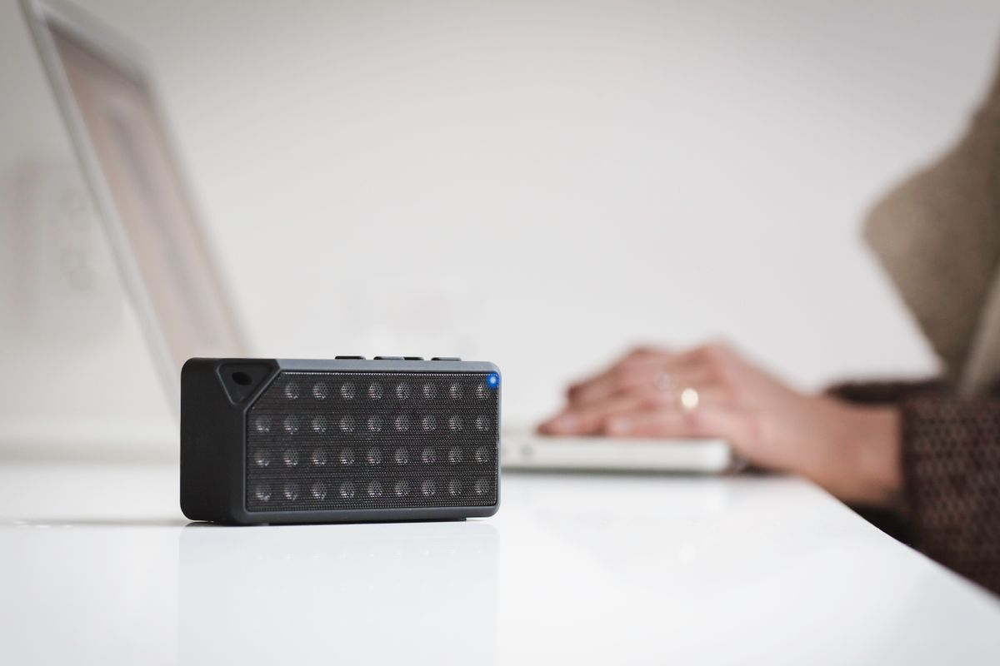

Bluetooth 5.3 กับ 5.4 ต่างกันอย่างไร? อธิบายให้เข้าใจง่าย ก่อนเลือกซื้ออุปกรณ์ไร้สายบนโต๊ะทำงาน 2026
Bluetooth 5.4 ต่างจาก 5.3 ตรงไหน จำเป็นต้องอัปเกรดไหม อธิบายฟีเจอร์ PAwR การเข้ารหัส และสิ่งที่ควรดูจริง ๆ เวลาเลือกซื้อหูฟัง คีย์บอร์ด เมาส์ ลำโพงไร้สาย
อัปเดต กรกฎาคม 2026เวลาเลือกซื้อหูฟัง คีย์บอร์ด เมาส์ หรือลำโพงไร้สายมาใช้บนโต๊ะทำงาน หลายคนมักเจอสเปกที่เขียนว่า "Bluetooth 5.3" หรือ "Bluetooth 5.4" แล้วสงสัยว่าเวอร์ชันที่ใหม่กว่าดีกว่าจริงไหม ต้องจ่ายแพงขึ้นเพื่ออัปเกรดหรือเปล่า บทความนี้จะอธิบายความต่างของทั้งสองเวอร์ชันแบบเข้าใจง่าย และช่วยให้คุณตัดสินใจได้ว่าสำหรับการใช้งานบนโต๊ะทำงานจริง ๆ ควรสนใจตรงไหน
ภาพรวมสั้น ๆ ก่อนเข้าเรื่อง
Bluetooth 5.3 เปิดตัวในปี 2021 เน้นปรับปรุงเรื่องความเสถียรของการเชื่อมต่อ การประหยัดพลังงาน และการจัดการสัญญาณรบกวนให้ดีขึ้น ส่วน Bluetooth 5.4 เปิดตัวตามมาในต้นปี 2023 โดยต่อยอดเรื่องประสิทธิภาพพลังงาน เพิ่มความปลอดภัย และเพิ่มความสามารถใหม่ที่ออกแบบมาเพื่อรองรับอุปกรณ์ IoT จำนวนมากพร้อมกัน พูดสั้น ๆ คือ 5.4 เป็นการอัปเกรดแบบค่อยเป็นค่อยไป ไม่ใช่การเปลี่ยนแปลงครั้งใหญ่แบบพลิกโฉม
ความแตกต่างหลักของ Bluetooth 5.4
PAwR (Periodic Advertising with Responses)
ฟีเจอร์เด่นที่สุดของ 5.4 คือ PAwR ซึ่งเปิดให้อุปกรณ์ตัวกลางสื่อสารกับอุปกรณ์ปลายทางจำนวนมากแบบซิงค์กันเป็นช่วงเวลาที่กำหนดไว้ อุปกรณ์ปลายทางจะ "ตื่น" ขึ้นมารับส่งข้อมูลเฉพาะช่วงที่ถูกจัดสรรเท่านั้น แล้วกลับไปพักต่อ วิธีนี้ช่วยประหยัดพลังงานได้มาก เหมาะกับเซ็นเซอร์หรืออุปกรณ์ที่ต้องใช้แบตเตอรี่ก้อนเดียวอยู่ได้เป็นเดือนหรือเป็นปี
รองรับป้ายราคาดิจิทัลและ IoT ขนาดใหญ่ (ESL)
Bluetooth 5.4 ออกแบบมาเพื่อรองรับระบบป้ายราคาดิจิทัล (Electronic Shelf Label) ในร้านค้า ที่ต้องคุมอุปกรณ์นับพันชิ้นจากจุดควบคุมเดียว อัปเดตราคาสินค้าได้รวดเร็วและปลอดภัย นี่คือเหตุผลหลักที่ Bluetooth SIG พัฒนาเวอร์ชันนี้ขึ้นมา ซึ่งเป็นการใช้งานเชิงอุตสาหกรรมมากกว่าการใช้ในบ้าน
เข้ารหัสข้อมูลการกระจายสัญญาณ (Encrypted Advertising Data)
ก่อนหน้านี้การเข้ารหัสมักใช้เฉพาะตอนที่อุปกรณ์เชื่อมต่อกันแล้ว แต่ 5.4 เพิ่มให้ข้อมูลช่วง "กระจายสัญญาณ" (advertising) ถูกเข้ารหัสได้ด้วย ช่วยลดโอกาสถูกดักฟังหรือปลอมแปลงข้อมูล เป็นการยกระดับความปลอดภัยอีกขั้น
ประสิทธิภาพพลังงานที่ดีขึ้นเล็กน้อย
ด้วยการปรับจังหวะการทำงานของ host stack ให้เหมาะสมขึ้น 5.4 จัดการแบตเตอรี่ได้ดีขึ้นเล็กน้อย โดยเฉพาะอุปกรณ์ที่ต้องเชื่อมต่อหลายจุดพร้อมกัน
แล้วสำหรับคนใช้โต๊ะทำงานทั่วไป ต่างกันแค่ไหน
ประเด็นสำคัญที่ควรเข้าใจคือ ฟีเจอร์ใหม่ของ 5.4 ส่วนใหญ่เป็นเรื่องของ IoT ขนาดใหญ่และระบบเชิงพาณิชย์ ไม่ใช่สิ่งที่ผู้ใช้หูฟัง คีย์บอร์ด หรือเมาส์ตามบ้านจะสัมผัสได้ชัดในชีวิตประจำวัน สำหรับการฟังเพลง ประชุมออนไลน์ หรือพิมพ์งาน คุณภาพเสียง ความหน่วง และความเสถียร ระหว่าง 5.3 กับ 5.4 แทบไม่ต่างกันในการใช้จริง เพราะปัจจัยเหล่านั้นขึ้นอยู่กับชิป ตัวโคเดก (เช่น aptX, LDAC, LC3) และการออกแบบของผู้ผลิตมากกว่าเลขเวอร์ชัน Bluetooth
พูดง่าย ๆ คือ ไม่จำเป็นต้องจ่ายแพงขึ้นเพียงเพราะอยากได้เลข 5.4 ถ้าอุปกรณ์ที่ถูกใจใช้ 5.3 ก็เพียงพอสำหรับการทำงานบนโต๊ะแล้ว
เกณฑ์ที่ควรดูจริง ๆ เวลาเลือกอุปกรณ์ไร้สาย
แทนที่จะโฟกัสแค่เวอร์ชัน Bluetooth แนะนำให้ดูปัจจัยเหล่านี้ประกอบ
โคเดกที่รองรับ ถ้าเน้นฟังเพลงคุณภาพสูงควรดูว่ารองรับ LDAC หรือ aptX Adaptive ไหม ถ้าเน้นประชุมและความหน่วงต่ำ ลองมองหา LC3 หรือโหมด low latency
ความหน่วง (Latency) สำคัญมากถ้าดูวิดีโอหรือประชุม เสียงกับภาพต้องตรงกัน ควรเลือกรุ่นที่ระบุ low latency
การเชื่อมต่อหลายอุปกรณ์ (Multipoint) ช่วยให้สลับระหว่างคอมกับมือถือได้ไม่ต้องจับคู่ใหม่ เป็นฟีเจอร์ที่มีประโยชน์กับมือ WFH มากกว่าเลขเวอร์ชัน
อายุแบตเตอรี่และระยะสัญญาณ ดูตัวเลขจริงจากสเปกและรีวิว มากกว่าจะเดาจากเวอร์ชัน Bluetooth เพียงอย่างเดียว
อุปกรณ์ไร้สายบนโต๊ะที่ได้ประโยชน์จาก Bluetooth รุ่นใหม่
หูฟังไร้สายลดเสียงรบกวนสำหรับทำงาน เหมาะกับคนประชุมออนไลน์บ่อย ควรเลือกรุ่นที่รองรับ multipoint และโคเดกความหน่วงต่ำ เพื่อให้เสียงตรงกับภาพและสลับอุปกรณ์ได้ลื่น
คีย์บอร์ดไร้สายเชื่อมต่อหลายอุปกรณ์ เหมาะกับคนที่สลับพิมพ์ระหว่างคอมและแท็บเล็ต ฟีเจอร์ multipoint สำคัญกว่าเลขเวอร์ชัน Bluetooth มาก
เมาส์ไร้สายประหยัดพลังงาน เหมาะกับคนที่อยากให้แบตอยู่ได้นาน Bluetooth รุ่นใหม่ช่วยเรื่องประหยัดพลังงาน แต่ควรดูค่าความจุแบตและ DPI ประกอบด้วย

ลำโพงบลูทูธตั้งโต๊ะ เหมาะกับคนที่อยากได้เสียงเพลงคลอระหว่างทำงาน คุณภาพเสียงขึ้นอยู่กับไดรเวอร์และโคเดกมากกว่าเวอร์ชัน Bluetooth
สรุป
Bluetooth 5.4 เป็นการอัปเกรดต่อยอดจาก 5.3 โดยเพิ่มฟีเจอร์อย่าง PAwR การรองรับป้ายราคาดิจิทัลและ IoT ขนาดใหญ่ การเข้ารหัสข้อมูลกระจายสัญญาณ และประสิทธิภาพพลังงานที่ดีขึ้นเล็กน้อย แต่จุดที่ต้องเข้าใจคือ ฟีเจอร์เหล่านี้ส่วนใหญ่เป็นเรื่องเชิงอุตสาหกรรม ไม่ใช่สิ่งที่ผู้ใช้อุปกรณ์บนโต๊ะทำงานทั่วไปจะรู้สึกต่างในชีวิตประจำวัน ดังนั้นเวลาเลือกซื้อหูฟัง คีย์บอร์ด เมาส์ หรือลำโพง ไม่ต้องยึดติดกับเลขเวอร์ชันมากเกินไป ให้ดูโคเดก ความหน่วง การเชื่อมต่อหลายอุปกรณ์ และอายุแบตเตอรี่เป็นหลัก จะได้อุปกรณ์ที่ตอบโจทย์การทำงานจริงมากกว่า
บทความนี้มีลิงก์ affiliate เมื่อคุณซื้อผ่านลิงก์ เราอาจได้รับค่าคอมมิชชั่นโดยที่คุณไม่ต้องจ่ายเพิ่ม